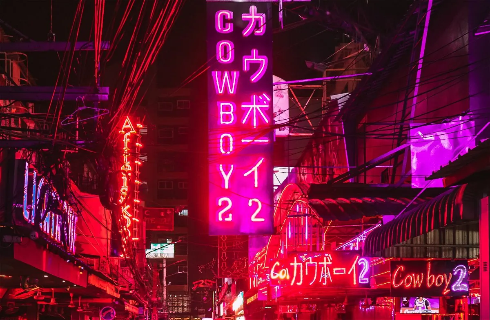

50 Euros for the Pleasures. Sex Workers in Red-Light Districts
Sex Workers in Red Light Districts
50 Euros for the Pleasures
Oliwia Jackowska reports for Favas.net on ensuring the safety and independence of sex workers. And why red light districts? According Jackowska prostitution and sex services have always been lining the urban fabric around the world. Sex work has been dubbed the oldest profession in history. Her article explores the contradicting ideas on sex work and why we should be talking about it.

In a political discussion about women’s rights in Poland, after a nearly total abortion ban in the country, I was told that “if a man loses his job, he becomes homeless; a woman always has the option to sell sex, and the strong market demand for their services makes women privileged”. This, quite frankly, ridiculous comment inspired me to explore why still mostly women find work in prostitution, and what role does this play in the protection of women’s rights? There are very few topics that spark such polarised responses either in academic studies, public opinion or political actions. Many different actors involved in the discussions are biased and present contradicting images of reality. Even the relevant data is often unverifiable. The stigmatisation of prostitution makes it impossible to resolve the core problems – ensuring the safety and independence of sex workers.

The red light district in Amsterdam is a popular tourist destination, and I have walked through it whenever visiting the city. Other red light districts are scattered around the world, with some of the most known located in Thailand. The combination of the legality and regulation of prostitution in these districts, is one of the two approaches debated by the EU parliament in tackling the illegal sexual activities and human trafficking. The other one is described as abolitionist – the supporters of which argue that human trafficking and prostitution are interlinked and sex work should be completely de-legalised (European Commission, 2016). However forward-thinking and liberating the legalisation of prostitution might seem though, there are a lot of issues that you don’t see at first glance.
First of all, creating red light districts in the city and confining public sex activity to one area does not serve the celebration of sexuality, but rather, in the eyes of city planners, it limits the dirt within the boundaries of its district. This ensures better spatial control over the activities. You could argue that it helps the police to protect the safety of the workers, but it also greatly reduces the opportunities for services to be performed on the sex worker’s own terms. Confinement to bars, clubs or rooms located in a specific area increases the competition for space and limits the creative control over their activity. According to an article by Humanity in Action, it costs around 90 to 150 Euros to rent a room for an eight-hour shift, which means that sex workers in Amsterdam’s red light district need at least four to five clients per day in order to be able to pay the rent (Cruz and van Iterson, 2021).

“It’s kind of like window shopping for clothes, but with girls inside.” (Belingar, 2016). This is how a blogger described his experience of “fulfilling a lifelong dream” and paying for sex services in Amsterdam. Personally, I fail to believe that women in shop-fronts, displayed like any other advertised product represents the real image of freedom and female sexual liberation?
Another problem faced by sex workers in the Netherlands is the lack of identity protection. To run their business legally, which involves employing a pimp and paying the rent, they need to register with the government. However, it is unclear what the data from registration is used for and who has access to it. With the stigmatisation of prostitution in society, the access to such data by potential future employers could limit the sex workers’ options for an alternative career (Cruz and van Iterson, 2021). This lack of anonymity, combined with high costs of running a business legally, and competition for spaces makes more and more sex workers risk their personal safety and choose the illegal path instead.
With everything considered, Amsterdam still represents a good step towards tackling sexual exploitation in a reasonable way. In most of the world, street workers are just part of the urban reality, and considered a taboo, their safety is rarely discussed. The subject of prostitution and sexual exploitation is extremely gendered, and still needs to be addressed as a protection of women’s rights. You could argue that men can also be sex workers, and their rights need to be addressed as well. However, to truly tackle these problems the underlying bias and general context needs to be better uncovered. The EU reports on human trafficking in 2016 show that 77% of registered victims in EU (excluding UK data) were female, and 95% of all people trafficked specifically for sexual exploitation were women and girls. Men constitute the majority of victims trafficked for labour exploitation.
According to some literature, women entering prostitution are often linked to vulnerability, homelessness and limited access to legal employment due to discrimination. Linked to this data, most of the EU member states, feminist groups and politicians advocate for abolition of prostitution. They recognise that such activity often puts women in high risks of physical and psychological harm, and even risks of death. In contrast to that, the sex worker and human rights organizations have repeatedly advocated for decriminalization of prostitution. When all forms of prostitution are illegal, the sex workers are far more reluctant to report abuse or other under-age workers as they fear being arrested as well. This affects the actual safety of women, and makes human trafficking even more difficult to uncover (Schulze et al., 2014).
I find this lack of consensus on the basic principles, the biggest challenge for the future of sex workers. There are some examples that show the dissonance between these realities. The EU parliament shares that 89% of sex workers have no other possibility for economic survival, even though they wish to escape prostitution. However, as pointed out by Maggie McNeill, a retired call girl now turned writer, many of these reports are distorted due to the fact that woen interviewed are usually found in jail or drug addiction facilities (Cruz and van Iterson, 2021).
Invisible at first, there is a strong distinction between those who enter prostitution due to vulnerability and those who actually wish to perform the work. The sex-workers-by-choice struggle therefore with increasing competition, having to fight with the stigma, and experiencing lack of support for building truly independent businesses. Sex workers, along with physical services, often also provide psychological support, as this is what returning customers search for. An interesting representation of a sex-worker-feminist was portrayed in a Netflix series Easy. Sally is a Chicago based writer who also works as an escort to pay her bills. She invites the customers to her own apartment and the interactions often show a strong emotional bond, which she builds with the men through conversation and physical touch. The character was portrayed by Karley Sciortino, who is an outspoken activist for sexual liberation, who also recently wrote an article describing her appreciation for Sally’s character. Other outspoken sex workers and activists often advocate for regulations to be consulted with them, as the bias and discrimination often causes assumptions, which then find their way into the law enforcement.
Why red light districts? In symbolism, the colour red represents passion and sexuality, but also seduction and evil. The female body has been seen in history and in many religions only in two contexts: as an instrument for bearing children, and as a dangerous instrument to lure men towards evil and sin. On top of this, the unbalanced power relations in society, especially referring to financial resources, affect both men and women, and perpetuate the image of women selling and men buying sex (Schulze et al., 2014). Some experts argue that prostitution in effect reinforces this gender stereotype with men having potentially an unlimited access to women’s bodies, depending on their economic status.
All in all, the debate on prostitution is especially challenging. It involves bias, assumptions, social injustices, discrimination and lack of understanding. As I mentioned in the beginning, prostitution has always been lining the urban fabric. It is time for policy makers, urbanists, architects and designers to finally include sex workers in their drawings, plans and policies, and provide them with safety and independence that they need.

Bibliography
Belingar, Bostjan. “How I Had Sex with Amsterdam Prostitute .” Boss Life Hacks, February 2, 2016. https://www.bosslifehacks.com/2016/02/02/how-i-had-sex-with-an-amsterdam-prostitute/.
Cruz, Joshua, and Swaan van Iterson. “The Audacity of Tolerance: A Critical Analysis of Legalized Prostitution in Amsterdam’s Red Light District .” Humanity in Action Nederland. Accessed April 27, 2021. https://www.humanityinaction.org/knowledge_detail/the-audacity-of-tolerance-a-critical-analysis-of-legalized-prostitution-in-amsterdams-red-light-district/.
European Commission. “Data Collection on Trafficking in Human Beings in the EU: Final Report,” 2018. https://doi.org/10.2837/193237.
Schulze, Erika, Sandra Isabel Novo Canto, Peter Mason, and Maria Skalin. “DIRECTORATE GENERAL FOR INTERNAL POLICIES POLICY DEPARTMENT C: CITIZENS’ RIGHTS AND CONSTITUTIONAL AFFAIRS GENDER EQUALITY Sexual Exploitation and Prostitution and Its Impact on Gender Equality STUDY,” 2014.
Acknowledgements
This article by Oliwia Jackowska was previously published in Bnieuws 54/05, May 2021.
Bnieuws is the independent, student-run platform and monthly periodical for the Faculty of Architecture and the Built Environment, Delft University of Technology (Netherlands).
Oliwia Jackowska is a Master student from Poland, completed her undergraduate studies in the UK and is now (July 2021) an Urbanism student in Delft, as well as an editor at Bnieuws.
@oliwia.jack
This webpage is edited by Favas.net.
Selected images by Vicky Hladynets, Gio Mikava, Joan Oger, and Pablo Torrado.
This article of Oliwia Jackowska became part of ‘Red Light Realm’ – an ‘umbrella’ project under the responsibility of Favas.net. The aim of this project is a free and unconditional exploration of urban ‘red light’ zones.